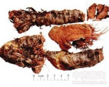

红景天

拼音
Hónɡ Jǐnɡ Tiān
别名
扫罗玛尔布（藏名）
来源
景天科红景天属植物红景天Rhodiola saera （Prain） Fu，以全草入药。9～10月采集，洗净晒干。
生境分布
生于高山岩石处。分布西藏等地。
药材特点
多年生草本，高10～20厘米。根粗壮，圆锥形，肉质，褐黄色，根颈部具多数须根。根茎短，粗壮，圆柱形，被多数覆瓦状排列的鳞片状的叶。从茎顶端之叶腋抽出数条花茎，花茎上下部均有肉质叶，叶片椭圆形，边缘具粗锯齿，先端锐尖，基部楔形，几无柄。聚伞花序顶生，花红色。蓇葖果。
性状
无性状数据
性味
甘、涩，寒。
功能主治
清肺止咳，止血，止带。用于肺热咳嗽，咯血，白带；外用治跌打损伤，烧烫伤。
用法用量
1～3钱；外用适量。
化学成分
1．库页红景天 根和茎含酪醇（tyrosol）和毛柳甙（salidroside），又称红景天甙（rhodioloside）。 2．圣地红景天 根分离出13种成分，经鉴定，其中九种为：咖啡酸（caffeic acid），伞形花内酯（umbelliferone），酪醇（tyrosol），没食子酸（gallic acid），没食子酸乙酯（gallic acidethyl ester），山奈酚（kaemoferol），β-谷甾醇（β-sitosterol），胡萝卜甙（daucosterol）及红景天甙（rhodioloside）。
药理作用
1：无药理作用
摘录
《全国中草药汇编》